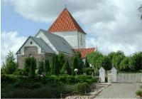
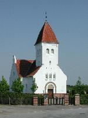
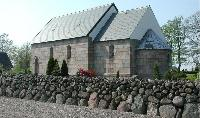

Ullits kirke
Svingelbjerg kirke
Foulum kirke



Klik på kirken for at se tidspunkter for gudstjeneste. Klik
her
for at se alle kirketider.
Klik på kirkens navn for at se kirkens historie.
Sognepræst
Troels Laursen
Ullitshøjvej 102
Gl. Ullits, 9640 Farsø
Tlf. 98 63 40 68
Hvis ikke andet er nævnt, varetages gudstjenesten af sognepræsten.